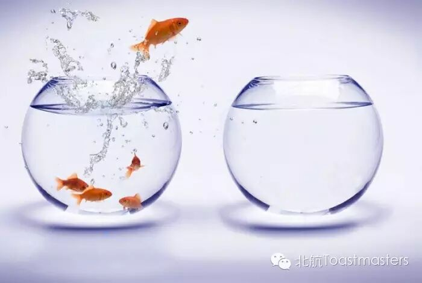

Self-break
TM:Jill
TTM:Vicky
Life is full of happiness, touching things and beauties, however, it is also full of difficulties and challenges. If you can get over them, you will be stronger and find a better yourself. But if you are defeated by them, you might lose your confidence in yourself and life. What kinds of challenges have you ever met in your life? What did you do when you face all those challenges? Welcome to our meeting and share your experiences with us. Let's make a breakthough!
Maggie, a beautiful girl with a kind heart. She said she was just a simple, ordinary girl. Yes, she is simple but never ordinary. I believe she must have some stimulating, funny experiences which have made her so unique. Welcome to our meeting and listen to Maggie’s first prepared speech—“a simple girl”.
“Single dog”, what a hurtful phrase for those single people. Nowadays, being single seems like a sin, your parents and the friends around you will keep asking and persuading you to find a girlfriend or a boyfriend. But is it really necessary to end your single life? What opinions does Grace² have about “single dog”? What will she say during her speech? I believe you must be very interested in it, too. So, come to our meeting and listen to Grace²’s speech.

https://mp.weixin.qq.com/s/FYcEiZ8RhtHbbFmP_tGpSg
本页为抢救式本地归档，图文已永久保存。